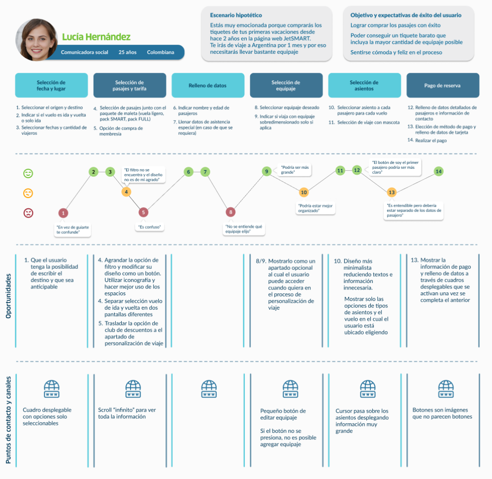

JetSMART


Rediseño de la página web de JetSMART para mejorar la experiencia de compra de tiquetes.
Tipo de proyecto: Rediseño de página web (solo para PC) de la selección y compra de tiquetes aéreos.
Rol: Rediseño de producto (UX/UI)
Herramientas utilizadas: Figma, Adobe Illustrator
*Nota: Esto es un proyecto conceptual y no está afiliado con JetSMART.
¿Por qué rediseñar?
La página web de JetSmart requiere de un rediseño debido a que distintas leyes heurísticas y leyes de UX no se cumplen, o en otros casos podrían precisar de ciertos arreglos y/o modificaciones para mejorar la experiencia de los usuarios, y así, estos puedan cumplir con sus tareas beneficiando a la empresa gracias al aumento de ventas y buenas calificaciones.
¿Qué se quiere lograr?
Una mejor experiencia hacia los usuarios al momento de utilizar la página web, enfatizando en el diseño visual y en el proceso de compra y selección de tiquetes para que los usuarios se sientan cómodos y seguros con su transacción y así quieran volver a comprar en JetSMART.

El proceso
1. Empatizar
Para entender mejor las necesidades y molestias de los usuarios, se realizó una encuesta a 12 personas que hayan realizado la compra de tiquetes aéreos alguna vez con los siguientes objetivos:
- Indagar los puntos de dolor de los usuarios al momento de realizar compras y/o trámites en las páginas web de las aerolíneas.
- Encontrar insights a partir de las respuestas de los usuarios para mejorar el diseño y funcionamiento de la plataforma web.
Hallazgos de la encuesta:
Conclusión: El diseño visual y la facilidad en el proceso de compra de tiquetes aéreos son fundamentales para los usuarios, pero la página web de JetSMART no cumple con estas expectativas, generando malas experiencias y desincentivando recomendaciones. Los encuestados prefieren un proceso de compra más simple, con menos pasos como la selección de maletas y paquetes, evitando el llenado excesivo de datos y la constante comparación de precios, que perciben como tediosa y ralentizadora.
2. Definir
A partir de los hallazgos de la encuesta, se definieron 2 user persona para tener como referencia en el momento de construir el esqueleto del diseño. Además se realizó el mapa de trayectoria para entender los sentimientos del usuario a lo largo del desarrollo de cada tarea en un escenario hipotético.
User persona


User persona

Acerca de
Lucía es muy apasionada por su profesión y por la moda. Vive sola pero tiene una pareja desde hace 3 años. Está muy activa en las redes sociales, no tiene carro y es muy organizada.
Objetivo personal
- Encontrar tiquetes de avión con buenas ofertas que le permitan ahorrar mas.
- Poder llevar todas las maletas que necesite en su viaje.
- No aturdirse a la hora de realizar la comparación de precios.
Motivaciones
- Poder tener sus vacaciones después de trabajar mucho.
- Poder ponerse sus outfits preferidos en el viaje para tomarse muchas fotos y subir a redes sociales.
- Sentir emoción y satisfacción al momento de comprar los pasajes hacia sus próximas vacaciones.
Frustraciones
- No encontrar un pasaje con un precio accesible.
- Después de seleccionar un tiquete económico, a este se le sube demasiado el precio por agregar una maleta.
- El proceso y la página en sí es muy lenta lo que puede generar que se desmotive a la hora de la compra.
Habilidades tecnológicas

Acerca de
Uno de sus pasatiempos es estar en familia y vive con sus dos pequeños perros: Javi y Luna. No es muy fan de la tecnología pero sí de la televisión. Suele hacerle el favor a familiares y amigos de comprarles pasajes aéreos pero nunca los ha comprado para el mismo
Objetivo personal
- Conseguirle a sus familiares la comodidad y economía en el tiquete aéreo.
- Agilizar el proceso de compra de tiquetes para no perder tiempo.
- Lograr viajar al mar con sus dos mascotas.
Motivaciones
- Encontrar el mejor precio para los tiquetes de sus familiares.
- La satisfacción y felicidad que siente al momento de realizar la compra.
- Poder viajar cómodamente con sus mascotas sin que estas pasen un mal viaje.
Frustraciones
- Si la página tarda en avanzar el tiempo de espera se agota y los precios suben.
- La letra pequeña a veces juega una mala pasada y se genera un aumento de precio.
- No suele entender el proceso para poder viajar con sus mascotas.
Habilidades tecnológicas
Mapa de trayectoria
Lean UX Canvas
Definir, validar y priorizar las soluciones para el usuario
3. Idear
En primer lugar se realizó una matriz de factibilidad, deseabilidad y viabilidad para determinar si las expectativas del usuario, producto y negocio se están alcanzando.
Arquitectura de la información
La manera en la que se organizará la información para facilitarle la navegación a los usuarios
Por otra parte, se definió el círculo de oro para pensar en el por qué, cómo y qué del proyecto para lograr una mayor empatía con el usuario.
Porqué
Queremos que nuestros usuarios sientan comodidad y seguridad a la hora de comprar tiquetes aéreos así como también proyectar el profesionalismo que ofrece nuestra empresa logrando conectar con nuestros clientes e impidiendo en el ellos cualquier tipo de incertidumbre en cuanto a la compra, su vuelo o JetSmart.
Cómo
- Generales: Aerolínea de bajo costo, compra y búsqueda de tiquetes aéreos, viaje, vacaciones
- Específico: Intuitivo, profesional, seguro, cómodo, satisfactorio (compra), amigable
- Texto de identidad: Compra segura y satisfactoria de tarifas Ultra bajas en tu aerolínea de confianza
Qué
- Transmisión visual de profesionalismo
- Comodidad en elección de equipaje
- Navegación libre y autónoma en la personalización del viaje
- Control del usuario al 100% de la compra de tiquetes
4. Prototipar
Para lograr una lluvia de ideas para la realización del prototipo, se dibujaron wireframes en baja calidad y así tener una primera idea del diseño.
Home
Búsqueda y elección de vuelos
Rediseño personalización de viaje
Selección de equipaje extra
Posterior a esto se definió la guía de estilos para poder mantener la esencia y marca de JetSMART.
Gracias a toda la previa investigación e ideación, se definió el prototipo en alta fidelidad:


Testeo de usabilidad
Se realizó un tipo de testeo remoto moderado para evaluar el rendimiento de los usuarios a través de la realización de cada una de las tareas.
Conclusión: El prototipo muestra unos resultados muy positivos siendo los cambios que deben realizarse mínimos, lo que permite concluir que su navegación es adecuada para el uso y entendimiento de los usuarios debido a que estos lograron realizar acertadamente todas sus tareas. También destacar la manera en que se solucionó el apartado de personalización de viaje permitiendo la reducción de información en pantalla y la autonomía de navegación del usuario.
Para finalizar
JetSMART es una aerolínea en crecimiento, llegando a nuevos países como Colombia lo que significa que requiere una experiencia apta para todo el público, con el objetivo de brindarle a sus usuarios la tranquilidad y comodidad de entrar a su página y comprar en la aerolínea que les brindará la oportunidad de realizar su próximo viaje. Por todo lo anterior, es indispensable que a pesar de las mejoras, estas puedan seguir siendo revisadas pero también actualizadas constantemente para que los usuarios sientan una navegación ligera y sencilla en todo momento y así puedan volar a su manera...